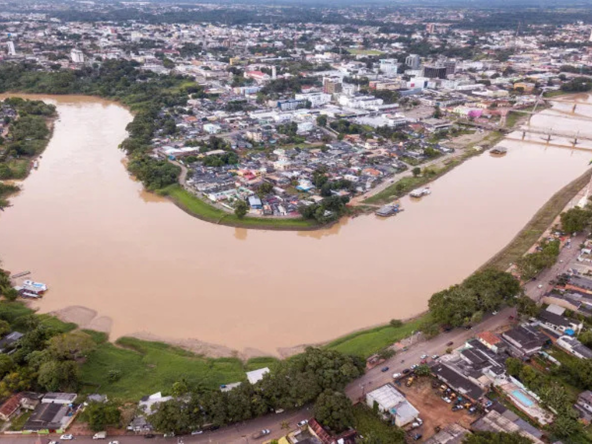

O Acre é um estado localizado na Região Norte do Brasil, conhecido por sua vasta cobertura de floresta amazônica e pela forte ligação com a preservação ambiental. Fazendo fronteira com a Bolívia e o Peru, o Acre possui grande riqueza natural, com rios, reservas extrativistas e uma biodiversidade típica da Floresta Amazônica. Sua capital, Rio Branco, concentra a maior parte da população e das atividades econômicas do estado. O Acre também se destaca pela importância histórica da luta dos seringueiros e pela atuação de Chico Mendes, símbolo da defesa da floresta e dos povos da Amazônia, tornando o estado referência em sustentabilidade e conservação ambiental.

Voltar